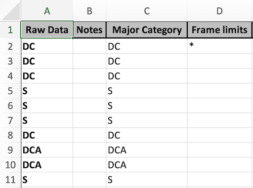
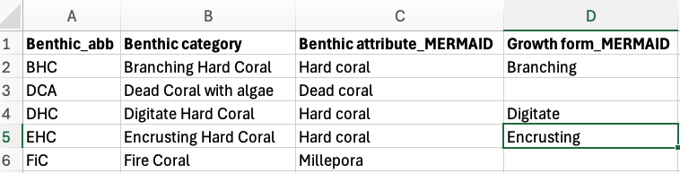
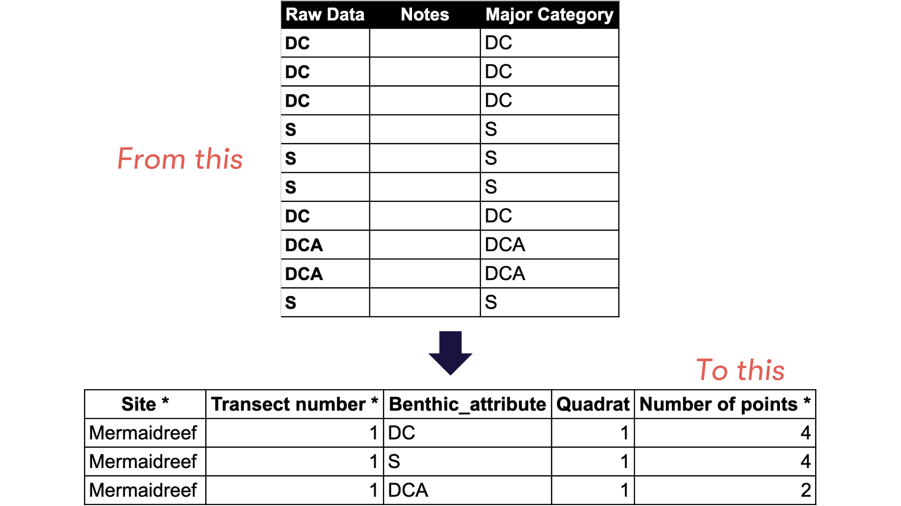

Photo quadrat transect (PQT) is one of the methods generally used to understand benthic community conditions. Before artificial intelligence emerged, scientists used Coral Point Count with Excel extensions (CPCe) to annotate their PQT. Once annotated, they continue with perform analysis to calculate the average cover of each benthic category. The first analysis steps is data cleaning. Data cleaning is one of the steps in analysis that takes most of the time. Data cleaning is a QA/QC process that is performed before analysing the data to ensure the results are scientifically reliable. MERMAID exist to help scientists and non-scientists cut the cleaning process and calculate the average benthic covers to quickly inform communities and governments.
You can import your CPCe data to MERMAID using our MERMAID R package mermaidr following our example below. You can also use our example data or use your own data to follow the importing steps. More information on the workflow of importing historical data to MERMAID can be found in our Importing legacy data into MERMAID documentation.
Prepare your project in MERMAID Collect and ensure that you are an Admin of the project
Prepare your CPCe raw data and a benthic attribute converter file in a CSV format
Install and activate mermaidr and other related packages
Download the MERMAID PQT template
Prepare and reformat your data to match the MERMAID template
Import your data to MERMAID Collect
Validate and submit your data in MERMAID Collect
Before importing your CPCe data to MERMAID, you need to set up your project in MERMAID Collect. If you are new to MERMAID, you need to create a MERMAID account before using it. You can use a new project or existing project in MERMAID Collect as long as you are an admin of the project. Setting up a new project requires internet access. To create a new project, click on the “New Project” button and then:
After you are done annotating your data with CPCe, export it. In the xls exported file, you will normally have a sheet that consist of four columns, i.e. Raw Data, Notes, Major Category, Frame limits (the image below). If you have more than one transect in an xls file, you will need to save each transect separately as a CSV file.

The benthic attribute converter file is a CSV file that contains your benthic labels and assign them to the correct MERMAID benthic attribute and/or growth forms. This file will be used to convert your labels to match the benthic attributes and/or growth forms accepted by MERMAID. You will only need to do this once then use this file every time you want to import your CPCe data to MERMAID. The file consists of four columns, i.e., Benthic_abb (your benthic labels), Benthic category (what your benthic labels stand for), Benthic attribute_MERMAID (what MERMAID benthic attribute it corresponds to), and Growth form_MERMAID (what MERMAID growth form it corresponds to. This column can be left blank).

After setting up your project in MERMAID Collect and preparing the
necessary files, you can now start importing your data in R or R Studio.
The first step is to install and activate the mermaidr and other related
packages. In this example, we will be using tidyverse for
data manipulation. Use the code below to install packages, if needed,
and then load them in.
Next step is to download the MERMAID Photo Quadrat Transect (PQT) template. We recommend using RStudio projects to keep track of where your code, existing data, and any data you save (including the MERMAID PQT template) are.
To download the MERMAID PQT template, you will need to select your
prepared project from the list of projects that mermaidr
gathered by filtering using the mermaid_get_my_projects( )
function from mermaidr. If you’re using a test project,
make sure to specify it by adding
include_test_project = TRUE. Then download the template
using the mermaid_import_get_template_and_options( )
function.
1: Get your MERMAID project. Omit
include_test_projects = TRUE if it is not a test
project.
project <- mermaid_get_my_projects(include_test_projects = TRUE)2: Filter to select just the project you are working on, and rename the object
3: Get the import template and options
pqt_template <- mermaid_import_get_template_and_options(
myproject,
"benthicpqt",
"benthicpqt_mermaidsurvey_template.xlsx"
)## ✔ Import template and field options written to benthicpqt_mermaidsurvey_template.xlsxBefore running the code above, make sure that you change the project name MERMAID reef survey in 2 to your actual project that you want to import your data into. Remember that you need to be an Admin of the project to be able to access and import your data.
After downloading the MERMAID PQT template, you can start preparing and reformatting your data to match the template. Matching means that your data has the same column name and options accepted by the MERMAID template. Start by loading your data and the benthic attribute converter file. In this example, we will be loading all three transects from one site, combining it, and then reformat it all together.
raw_t1 <- read_csv2("Mermaidreef_T1.csv")
raw_t2 <- read_csv2("Mermaidreef_T2.csv")
raw_t3 <- read_csv2("Mermaidreef_T3.csv")
ba_conv <- read_csv2("BA_converter.csv")If you are using a comma (“,”) to separate each data, use read_csv() instead of read_csv2(). This depends on your computer settings.
After loading the data, continue with cleaning the data. In this example, the cleaning data steps are:
Remove blank rows (if any),
Rename the “Raw Data” column to
Benthic_attribute,
Add necessary columns for each transect, i.e.,
Site * and Transect number * (the column names
match the MERMAID template), and
Combine the three transects.
# 1. Remove blank rows (if any)
pqt_t1 <- raw_t1 %>%
filter(!is.na(`Raw Data`))
# 2. Rename the "Raw Data" column to "Benthic_attribute"
pqt_t1 <- pqt_t1 %>%
rename(Benthic_attribute = `Raw Data`)
# 3. Add necessary columns, i.e., "Site *" and "Transect number *"
pqt_t1 <- pqt_t1 %>%
mutate(
`Site *` = "1206",
`Transect number *` = 1,
.before = "Benthic_attribute"
)
# Repeat steps 1 - 3 for transect 2 and 3
pqt_t2 <- raw_t2 %>%
filter(!is.na(`Raw Data`))
pqt_t2 <- pqt_t2 %>%
rename(Benthic_attribute = `Raw Data`)
pqt_t2 <- pqt_t2 %>%
mutate(
`Site *` = "1206",
`Transect number *` = 2,
.before = "Benthic_attribute"
)
pqt_t3 <- raw_t3 %>%
filter(!is.na(`Raw Data`))
pqt_t3 <- pqt_t3 %>%
rename(Benthic_attribute = `Raw Data`)
pqt_t3 <- pqt_t3 %>%
mutate(
`Site *` = "1206",
`Transect number *` = 3,
.before = "Benthic_attribute"
)
# 4. Combine the three transects
pqt <- bind_rows(pqt_t1, pqt_t2, pqt_t3)
pqt## # A tibble: 90 × 6
## `Site *` `Transect number *` Benthic_attribute Notes `Major Category` `Frame limits`
## <chr> <dbl> <chr> <lgl> <chr> <chr>
## 1 1206 1 DC NA Substrate *
## 2 1206 1 DC NA Substrate <NA>
## 3 1206 1 DC NA Substrate <NA>
## 4 1206 1 S NA Substrate <NA>
## 5 1206 1 S NA Substrate <NA>
## 6 1206 1 S NA Substrate <NA>
## 7 1206 1 DC NA Substrate <NA>
## 8 1206 1 CCA NA CCA <NA>
## 9 1206 1 CCA NA CCA <NA>
## 10 1206 1 S NA Substrate **
## # ℹ 80 more rowsNow that you have all the three transects combined, you can continue
adding the rest of the mandatory columns. Mandatory columns are marked
with an asterisk (*) next to the column name. You’ve added two mandatory
columns to your data in the previous steps, which are
Site * and Transect number *.
The next mandatory column that you are going to add is the quadrat
numbers (Quadrat *) for each row based on the number of
points you used per quadrat in your method. This example is using 10
points per quadrat. The quadrat numbers are assigned using the code
below.
You will be adding the quadrat number column (Quadrat *)
by assigning the same number every 10 rows, where it increases every 10
rows and restart from 1 when a value in the column Site *
and Transect number * changes. If you are using a different
number of points per quadrat, simply replace “10” in the code with the
actual number of points you are using in your method.
pqt <- pqt %>%
group_by(`Site *`, `Transect number *`) %>%
mutate(`Quadrat *` = rep(1:(ceiling(n() / 10)), each = 10)[1:n()]) %>%
ungroup()In the MERMAID PQT template, you will find
Number of points * column. This column must be filled with
the total number of points for the same benthic attribute per quadrat.
CPCe provides data per point, meaning one point for one row, so you
might have the same benthic attribute in multiple rows for one quadrat.
This will be detected as a duplicate by MERMAID. Therefore, you need to
combine the same benthic attribute for the same quadrat (see figure
below).

Use the code below to calculate the number of points per benthic attribute for each quadrat:
pqt <- pqt %>%
group_by(`Site *`, `Transect number *`, `Quadrat *`, Benthic_attribute) %>%
dplyr::summarise(
`Number of points *` = n(),
.groups = "drop"
)Now you are ready to add the rest of the mandatory columns to your
data. The remaining mandatory columns are - management
regime (Management *), - sampling
date (Sample date: Year *,
Sample date: Month *, Sample date: Day *), -
depth (Depth *), transect
length (Transect length surveyed *), -
number of quadrats (Number of quadrats *),
- quadrat size (Quadrat size *), -
number of points per quadrat
(Number of points per quadrat *), - observer’s
email(s) (Observer emails *), and -
benthic attribute
(Benthic attribute *).
You are going to also add one optional column, which is
growth form (Growth from) as the data also
recorded in this example.
You are going to use the benthic converter attribute file to add the benthic attribute and growth form column. The code will match the label you used in your data with the label in the benthic attribute converter file, then return with the benthic attribute and/or growth form that are accepted by MERMAID.
pqt <- pqt %>%
mutate(
`Management *` = "NTZ",
`Sample date: Year *` = 2020,
`Sample date: Month *` = 10,
`Sample date: Day *` = 21,
`Depth *` = 10,
.before = "Transect number *"
) %>%
mutate(
`Transect length surveyed *` = 50,
`Number of quadrats *` = 3,
`Quadrat size *` = 0.5 * 0.5,
`Number of points per quadrat *` = 10,
`Observer emails *` = "amkieltiela@datamermaid.org",
.before = "Quadrat *"
)
pqt <- pqt %>%
left_join(
ba_conv %>%
select(Benthic_abb,
`Benthic attribute *` = `Benthic attribute_MERMAID`,
`Growth form` = `Growth form_MERMAID`
),
by = c("Benthic_attribute" = "Benthic_abb")
) %>%
relocate(`Benthic attribute *`, `Growth form`, .after = "Quadrat *")
pqt## # A tibble: 41 × 17
## `Site *` `Management *` `Sample date: Year *` `Sample date: Month *` `Sample date: Day *`
## <chr> <chr> <dbl> <dbl> <dbl>
## 1 1206 NTZ 2020 10 21
## 2 1206 NTZ 2020 10 21
## 3 1206 NTZ 2020 10 21
## 4 1206 NTZ 2020 10 21
## 5 1206 NTZ 2020 10 21
## 6 1206 NTZ 2020 10 21
## 7 1206 NTZ 2020 10 21
## 8 1206 NTZ 2020 10 21
## 9 1206 NTZ 2020 10 21
## 10 1206 NTZ 2020 10 21
## # ℹ 31 more rows
## # ℹ 12 more variables: `Depth *` <dbl>, `Transect number *` <dbl>,
## # `Transect length surveyed *` <dbl>, `Number of quadrats *` <dbl>, `Quadrat size *` <dbl>,
## # `Number of points per quadrat *` <dbl>, `Observer emails *` <chr>, `Quadrat *` <int>,
## # `Benthic attribute *` <chr>, `Growth form` <chr>, Benthic_attribute <chr>,
## # `Number of points *` <int>After assigning each label to the accepted benthic attributes and/or growth forms, you can now remove the benthic attribute column that has your labels from the data frame using the code below:
Your data now matches the MERMAID template and is ready to be imported to your project in MERMAID Collect. The steps to import your data are:
Validate your data to what you’ve set up in your project and options that MERMAID accepts. This is reflected in the MERMAID PQT template that you’ve downloaded
Address issues, if any
Recheck the data one more time by doing a dry run
Import your data to MERMAID
Validate your data using the
mermaid_import_check_options() function for each column.
This function will compare your data with the MERMAID PQT template
you’ve downloaded, which is based on what you have set up in the
project. If the data matches, a check mark will appear. If there’s an
issue, MERMAID will mark the issue with a FALSE note
under the “match” column and provide the closest choice to help us
address the issue(s). Issues must be addressed to be able to upload the
data, except for non-mandatory fields. Non-mandatory fields can
be left blank or removed entirely from the data frame. For
example, in this example, you will find blank growth form(s), because
not all benthic attributes have growth forms. Although you received a
red dot and a message saying, “some errors in values of ‘Growth form’ -
please check table below,” it is okay to leave it as is. You can still
import your data to MERMAID.
mermaid_import_check_options(pqt, pqt_template, "Site *")## ✔ All values of `Site *` match## # A tibble: 1 × 3
## data_value closest_choice match
## <chr> <chr> <lgl>
## 1 1206 1206 TRUE
mermaid_import_check_options(pqt, pqt_template, "Management *")## • Some errors in values of `Management *` - please check table below## # A tibble: 1 × 3
## data_value closest_choice match
## <chr> <chr> <lgl>
## 1 NTZ Use FALSE
mermaid_import_check_options(pqt, pqt_template, "Sample date: Year *")## ✔ Any value is allowed for `Sample date: Year *` - no checking to be done
mermaid_import_check_options(pqt, pqt_template, "Sample date: Month *")## ✔ Any value is allowed for `Sample date: Month *` - no checking to be done
mermaid_import_check_options(pqt, pqt_template, "Sample date: Day *")## ✔ Any value is allowed for `Sample date: Day *` - no checking to be done
mermaid_import_check_options(pqt, pqt_template, "Depth *")## ✔ Any value is allowed for `Depth *` - no checking to be done
mermaid_import_check_options(pqt, pqt_template, "Transect number *")## ✔ Any value is allowed for `Transect number *` - no checking to be done
mermaid_import_check_options(pqt, pqt_template, "Transect length surveyed *")## ✔ Any value is allowed for `Transect length surveyed *` - no checking to be done
mermaid_import_check_options(pqt, pqt_template, "Number of quadrats *")## ✔ Any value is allowed for `Number of quadrats *` - no checking to be done
mermaid_import_check_options(pqt, pqt_template, "Quadrat size *")## ✔ Any value is allowed for `Quadrat size *` - no checking to be done
mermaid_import_check_options(pqt, pqt_template, "Number of points per quadrat *")## ✔ Any value is allowed for `Number of points per quadrat *` - no checking to be done
mermaid_import_check_options(pqt, pqt_template, "Observer emails *")## ✔ All values of `Observer emails *` match## # A tibble: 1 × 3
## data_value closest_choice match
## <chr> <chr> <lgl>
## 1 amkieltiela@datamermaid.org amkieltiela@datamermaid.org TRUE
mermaid_import_check_options(pqt, pqt_template, "Quadrat *")## ✔ Any value is allowed for `Quadrat *` - no checking to be done
mermaid_import_check_options(pqt, pqt_template, "Benthic attribute *")## ✔ All values of `Benthic attribute *` match## # A tibble: 14 × 3
## data_value closest_choice match
## <chr> <chr> <lgl>
## 1 Crustose coralline algae Crustose coralline algae TRUE
## 2 Dead coral Dead coral TRUE
## 3 Sand Sand TRUE
## 4 Acropora Acropora TRUE
## 5 Hard coral Hard coral TRUE
## 6 Rock Rock TRUE
## 7 Macroalgae Macroalgae TRUE
## 8 Rubble Rubble TRUE
## 9 Soft coral Soft coral TRUE
## 10 Millepora Millepora TRUE
## 11 Other invertebrates Other invertebrates TRUE
## 12 Sponge Sponge TRUE
## 13 Turf algae Turf algae TRUE
## 14 Heliopora Heliopora TRUE
mermaid_import_check_options(pqt, pqt_template, "Growth form")## ✔ All values of `Growth form` match## # A tibble: 7 × 3
## data_value closest_choice match
## <chr> <chr> <lgl>
## 1 Branching Branching TRUE
## 2 Encrusting Encrusting TRUE
## 3 Foliose Foliose TRUE
## 4 Massive Massive TRUE
## 5 Digitate Digitate TRUE
## 6 Mushroom coral Mushroom coral TRUE
## 7 Submassive Submassive TRUE
mermaid_import_check_options(pqt, pqt_template, "Number of points *")## ✔ Any value is allowed for `Number of points *` - no checking to be doneAfter addressing all the issues, you can save the clean data as a CSV file using the code below:
write_csv(pqt, "pqt_mermaidreef.csv")After validating and addressing all the issues, you
need to perform a dry run check one last time using the
mermaid_import_project_data() function and set
dryrun = TRUE.
mermaid_import_project_data(
pqt,
myproject,
method = "benthicpqt",
dryrun = TRUE
)## Records successfully checked! To import, please run the function again with `dryrun = FALSE`.Once you received the message Records successfully checked!, change the dryrun option to FALSE to start importing your data to MERMAID Collect.
mermaid_import_project_data(
pqt,
myproject,
method = "benthicpqt",
dryrun = FALSE
)## Records successfully imported! Please review in Collect.After you received the message Record successfully imported! Please review in Collect, head to your Collecting Page in your project in the MERMAID Collect. Continue with validating and submitting each transect.
Congratulations! You have successfully imported your CPCe data to MERMAID!